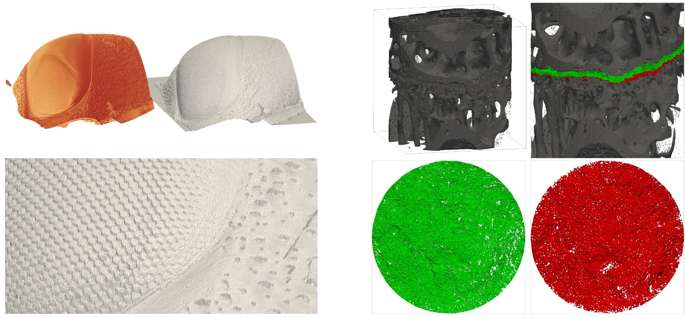

Technical University of Denmark
This website is the project page for the fcBK project and paper. As the paper is under review (preprint), the information on the page is temporary! More details will come closer to publication. The "Paper" button/link currently points to the arXiv version, and will be updated after review!
Computing a minimum s-t cut in a graph is a solution to a wide range of computer vision problems, and is often done using the Boykov-Kolmogorov (BK) algorithm. In this paper, we revisit the BK algorithm from both a theoretical and practical point of view. We improve the analysis of the time complexity of the BK algorithm to O(mn|C|) and propose a new algorithm, the fast and compact BK (fcBK) algorithm, with a time complexity of O(m|C|), where m, n, and |C| are the number of edges, number of vertices, and the capacity of the cut, respectively. We additionally propose a compact graph representation that allows our implementation to find a minimum s-t cut in a graph with upwards of 10^9 vertices and 10^10 edges on a machine with 128 GB of memory. We find our implementation of the BK algorithm to be the fastest available implementation of the BK algorithm when evaluating on a comprehensive set of benchmark datasets, highlighting the importance of memory-efficient implementations. We make our implementations publicly available for further research and implementation development within minimum s-t cut algorithms.
Figures will be coming here soon!

Figure 6 from the paper.
Will be available soon!